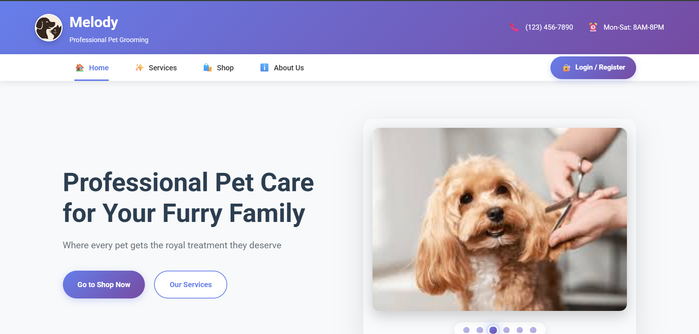

Melody
Pet Grooming Management System · Academic Project

Project Overview
Melody is a web-based pet grooming management application developed as an academic project. It provides an interface for pet-related services and shopping, supported by database operations.
Key Features
- Pet information management
- Appointment management
- Shopping cart functionality
- Interactive user interfaces designed for usability
Technologies Used
ASP.NET Core MVCC#Microsoft SQL Server
Project Screenshots
Explore the customer-facing features and administration screens of Melody. Click any screenshot to view it in full size.